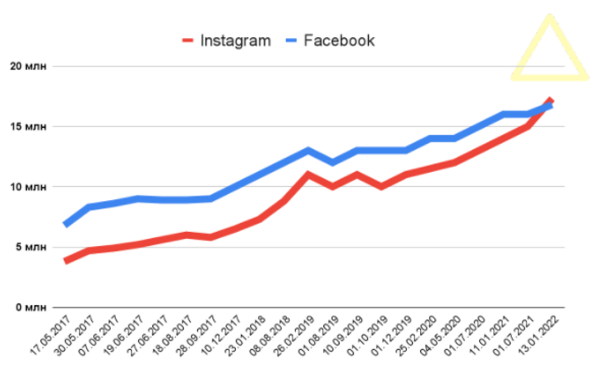

Instagram в Україні вперше випередив Facebook за аудиторією
Instagram за 6 місяців стрімко зріс – до 17,3 мільйона користувачів (+2,3 млн). Facebook за півроку збільшив українську аудиторію на 800 тисяч користувачів – до 16,8 мільйона. В результаті Instagram вперше випередив Facebook в Україні.
Tik-tok
З цікавого – TikTok перестав бути сервісом лише для підлітків і випереджає всі соцмережі в Україні для аудиторії до 25.
Отже, що ще цікавого станом на січень 2022 року?
- Першим серед усього населення є YouTube. Соцмережа лідирує у всіх вікових категоріях 25+, поступившись тільки TikTok (N1 для молоді).
- Жінки досі основні користувачі соцмереж, але за приростом чоловіча аудиторія Instagram вперше випередила жіночу у більшості вікових категорій.
- Десктоп відходить у минуле: менше 15% користувачів заходять до соцмереж з планшета або комп'ютера.